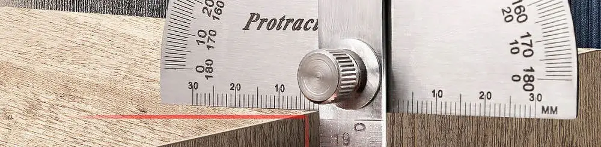

Membuat Klinometer Sederhana Untuk Memperkirakan Ketinggian Bangunan

Teman-teman kemungkinan pernah bersinggungan dengan klinometer, saat di bangku sekolah menengah atau saat sedang beraktivitas di dalam ektra-kulikuler pramuka. Klinometer versi sederhana ini adalah alat yang mudah dibuat dan juga mudah untuk digunakan. Lantas, apakah fungsinya? Nah, klinometer ini dapat digunakan untuk memperkirakan tinggi suatu benda atau tempat menggunakan sudut kemiringan.
Menggunakan Klinometer Untuk Memperkirakan Ketinggian Bangunan
Cara kerjanya adalah dengan memperkirakan kemiringan suatu benda atau tempat dari sudut pandang kita. Kemudian, menggunakan data kemiringan dalam derajat ini, kita cari tangen. Ditambah dengan data jarak kita dari lokasi yang sedang kita ukur, serta ketinggian posisi kita mengukur, ketinggian benda atau tempat dapat kita perkirakan.
Alat dan Bahan Membuat Klinometer Sederhana
Nah, lantas bagaimanakah cara untuk membuat klinometer sederhana? Alat dan bahan yang dibutuhkan adalah:
- Busur
- Benang (kita bisa pakai benang jahit biasa)
- Benda yang berat seperti batu atau bongkahan kayu
- Solasi
Langkah-Langkah Membuat Klinometer Sederhana
- Kita letakkan benang di titik pusat busur, yang berada di bagian tengahnya. Jadi, bila nantinya benang yang sudah digantungi batu tersebut akan diarahkan ke bawah, kita akan mendapatkan sudut sebesar 90°.
- Setelah benang berada di titik tengah busur, salah satu ujungnya kita selotip. Nah, kita perlu pastikan agar menggunakan selotip dalam jumlah cukup banyak agar tidak lepas ya, karena benang akan digantungi batu. Kita bisa pakai selotip sepanjang sekitar 4-5 cm bila diperlukan.
- Setelah salah satu ujung benang telah diselotip dengan kuat, kita potong benang hingga sepanjang sekitar 15 hingga 20 cm.
- Kemudian, kita ambil batu dan ikatkan ke ujung benang yang tidak diselotip. Kita juga bisa memperkuat posisi batu dengan tambahan selotip. Bila sedang tidak ada batu, kita juga bisa menggunakan kunci, obeng, atau barang apapun yang cukup berat.
Sedikit catatan, bila kita bisa menggantungkan batu hingga pada posisi dimana batu dan benang sudah tidak bergoyang-goyang lagi karena terkena angin, maka batu sudah cukup berat. Namun, bila batu dan benang masih terus bergoyang akibat tiupan angin, maka diperlukan batu yang lebih berat. Hal ini diperlukan agar kita bisa memperkirakan sudut dengan lebih presisi karena posisi benang tidak bergerak-gerak.
Video Membuat Klinometer Sederhana
Bagaimana, mudah bukan membuat klinometer menggunakan busur, benang, selotip, dan batu? Video pendek tentang hal ini dapat dilihat dibawah ini. Semoga bermanfaat dan mari belajar bersama dengan cara yang menyenangkan.